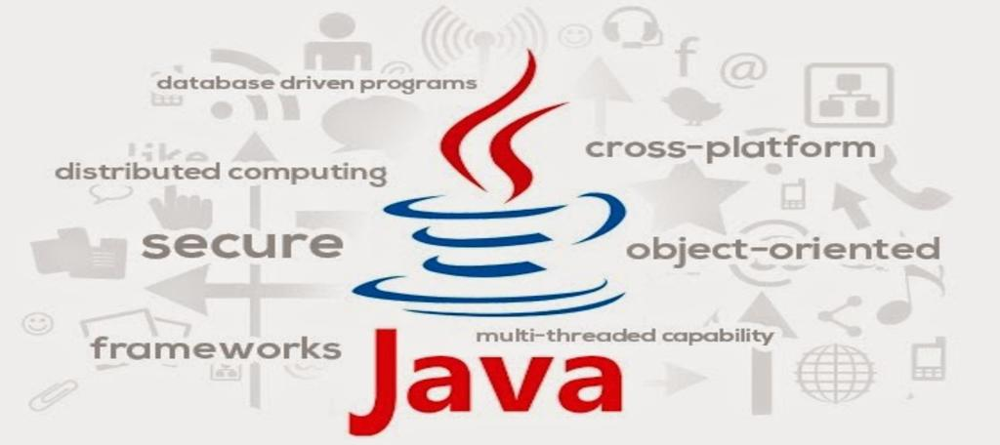

Features of Java Explained
The popular programming language Java has been around for more than 20 years.
Its popularity can be attributed to, among other things, its portability, security, and
scalability. Being across-platform language, its abilityto function on several systems
is one of the main factors in its appeal. Java is an object-oriented language that also
includes a robust type system and allows automatic memory management. It is a powerful
language for creating complex programmes thanks to its built-in support for multithrea
-ding and security features.In addition,Java features a simple syntax and comprehensive
API, making it simple to learn and Use.
Read More

What is Java?
Java is a widely used object-oriented programming language and software platform
that runs on billions of devices, including notebook computers, mobile devices gaming consoles
medical devices and many others.The rules and syntax of Java are based on the C,C++ languages.
One major advantage of developing software with Java is its portability.When the language was
invented in 1991 by James Gosling of Sun Microsystems the primary goal was to be ableto "write
"write once, run anywhere."
Read More

What is a Full Stack Developer?
A software engineer that is proficient in both front-end and back-end programming
is known as a full-stack developer.They have experience dealing with a variety of websites
development technologies,such as HTML,CSS,JavaScript,databases,servers,APIs, and frameworks
among others.Let’s take the building of a Facebook-like social media platform as anexample.
The front-end and back-end of the application would be built by a full-stack developer
focusing on this project.focusing on this project.
Read More